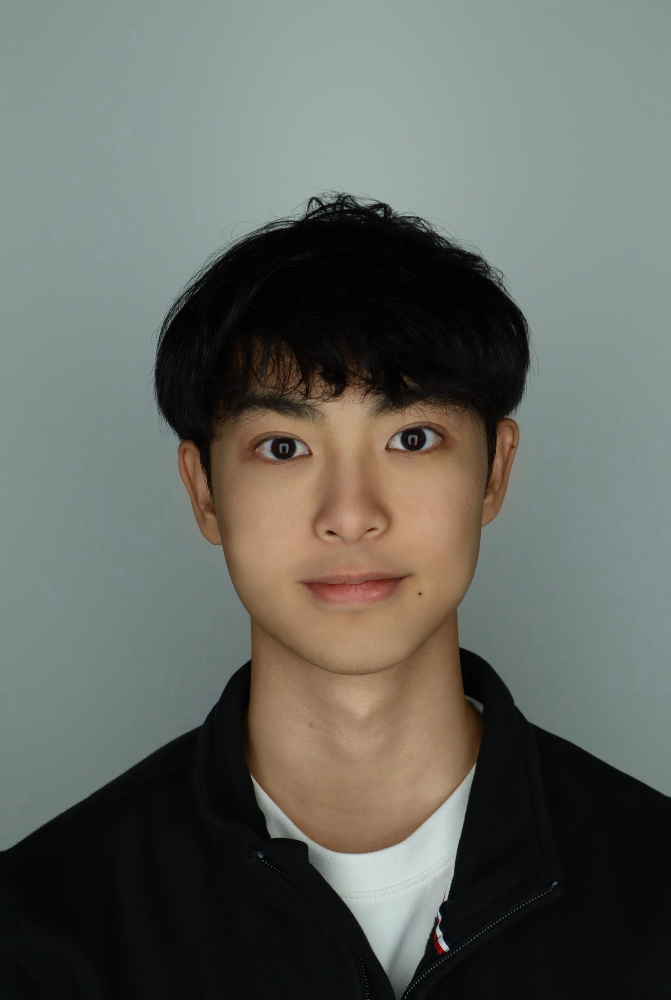

I train robot controllers and build the hardware they run on.
I'm a senior in Mechanical Engineering at UW–Madison, working on reinforcement learning and sim-to-real transfer for legged and humanoid robots.
I do research in the LeggedAI Lab with Prof. Xiaobin Xiong, co-lead motion control for BadgerBots, our RoboCup humanoid team advised by Prof. Josiah Hanna, and am building a stabilizing tail for a quadruped with Prof. Peter Adamczyk.

UW–Madison, May 2027
Research
 Hardware
HardwareQuadMorph: Smart-Material-Enabled Reconfigurable Shins for Wheel-Legged Quadrupedal Locomotion
Shape-memory-polymer shins let a small quadruped switch between wheels and legs using only its own joint motors and body weight. Learned policies handle rolling, walking and the transitions between them.
A three-legged policy for a robot with a dead motor
A hip motor failed during sim-to-real validation and the replacement was two weeks away. I modelled the joint as a passive hinge and trained a hopping policy, so the pipeline could be validated on hardware without waiting.
 Live demo
Live demoHumanoid walking, ball interception and a policy gallery
Walking and interception policies for the Booster K1, and a browser-based gallery that runs every teammate's policy through the same simulated gauntlet. Fifteen policies ranked so far. Interception is trained in simulation with hardware testing ongoing.
News
- Started senior capstone with Prof. Adamczyk on a bio-inspired tail for the Unitree Go2 (in progress).
- QuadMorph submitted to IEEE ICRA as first author.
- BadgerBots placed 4th of 14 at the RoboCup Asia-Pacific Beijing Masters.
- Competed at RoboCup 2026 in South Korea.